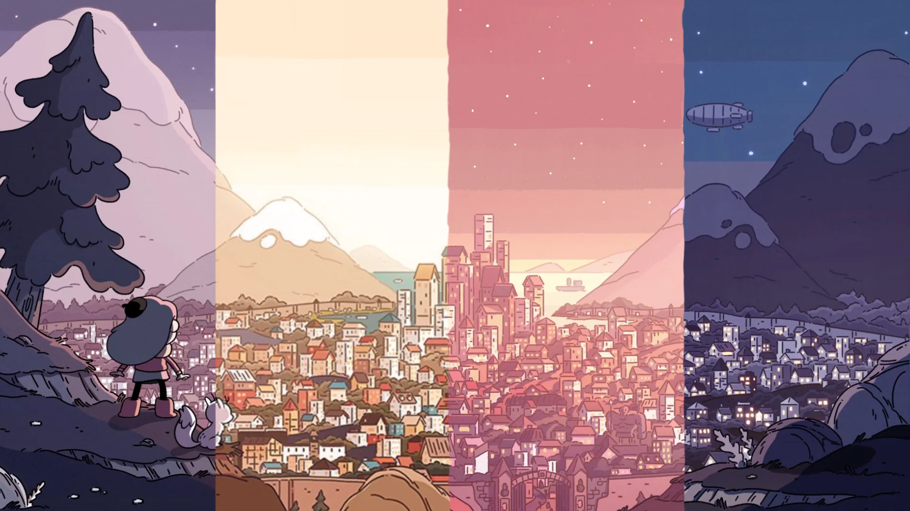

Welcome to My Digital Garden
Planning For a Garden
I first heard about “digital gardens” during Vicki Boykis’s rstudio::global 2021 keynote entitled “Your Public Garden.” During it, she discussed how it’s important to build a digital garden as a way to take control of your online experience and create a more positive space. This approach intrigued me, so I wanted to learn more about it. Maggie Appleton did an excellent job exploring how digital gardens serve as personal knowledge management systems, allowing individuals to cultivate their thoughts and ideas in a non-linear format. There are many benefits to planting and tending to a digital garden, such as fostering creativity, enabling serendipitous discovery, and facilitating knowledge sharing. I found this concept delightful, so I planted my own digital garden.
Before this, I had a website I built with Gatsby. I liked that website. The design was a fork of Simplefolio by Jacobo Martínez. I modified the theme’s colors to be more purplish-blue than sea green, changed the font, and added links to my social networks and data analysis projects. It took a while to finish the site, and I wish I documented the process. It served me well when it went live in 2021. However, I started my bachelor’s in Business Analytics program that year, and I started a new job on top of being a busy husband and father. Hence, the site has gone largely untouched since then. Earlier this year, however, I got the itch to rework my website. But what to do? I experimented with Hugo before settling on Quarto as my platform of choice. But why Quarto?
Why Quarto?
I’d love to jump into a list of well-thought-out reasons for using Quarto to plant the seeds of my digital garden like Silvia Canelón did. However, it really boiled down to inspiration, availability, and ease of use.
Inspiration: Upon searching for websites built using Quarto, I was inspired by the myriad of creatives using it to build not only websites but also communities, and I wanted to join the crowd.
Availability: Quarto was already available within RStudio Desktop, a tool I’ve used extensively since starting my bachelor’s program.
Ease of Use: Quarto required little more than a knowledge of RMarkdown to get started. Since I already possessed that, the barrier to entry was low for me.
Planting a Garden
Hopefully, I won’t regret this later. Still, I won’t detail how I planted my digital garden’s seeds. Instead, I’m going to list where I got my information and inspiration from:
- Jadey Ryan: Intermediate guide to publish a Quarto website with GitHub & Netlify
- This was my go-to resource while building my site. If you’re interested in using Quarto to plant a digital garden, I highly recommend you start here. I did most of what Jadey outlined, with a few exceptions:
- I don’t use Netlify for deployment. I use GitHub Pages.
- I didn’t use usethis.
- While I want my garden to be accessible to as many people as possible, I’m not using Lighthouse to audit the accessibility.
- This was my go-to resource while building my site. If you’re interested in using Quarto to plant a digital garden, I highly recommend you start here. I did most of what Jadey outlined, with a few exceptions:
- Marvin Schmitt: Create Your Website with Quarto: Complete Tutorial and Template
- I picked up a few tips and tricks here, mainly on adding new pages and deploying with GitHub Pages.
- I picked up a few tips and tricks here, mainly on adding new pages and deploying with GitHub Pages.
- Silvia Canelón
- She inspired me to go repo-diving to learn how things were done on other people’s sites, primarily how she built her contact form1.
- Samantha Csik: Adding a blog to your existing Quarto website
- I followed Sam’s guidance in adding a blog (i.e., this section of my garden) to my website.
- She also helped me figure out how to add some pizzazz to my web pages.
- She also helped me figure out how to add some pizzazz to my web pages.
- I followed Sam’s guidance in adding a blog (i.e., this section of my garden) to my website.
- Hilda
- Hilda is a graphic novel series and an animated television show created by Luke Pearson. It features gorgeous artwork which has been described as “Scandinavia by way of Miyazaki.” Take a look for yourself and I think you’ll get it.

Welcome to My Digital Garden
So, welcome to my digital garden! I’m not entirely sure what this place will become, but I don’t envision it being an obnoxiously active spot vying for your clicks. I want this to be a place where I can share thoughts and ideas and, hopefully, be part of something bigger than myself.
Footnotes
Silvia Canelón went repo-diving while working on her contact form and learned from Tidy Tales’ About page. I should probably update my source to reflect that.↩︎